Tập trung vào máy móc cho ngành vật liệu trang trí
Zhengyi Machinery đặt nhà máy tại Foshan, chuyên phát triển, sản xuất, lắp đặt và hỗ trợ sau bán hàng cho thiết bị in, ghép, phủ và hoàn thiện cuộn.
Hỗ trợ nhà máy chọn đúng cấu hình
Đội ngũ kỹ thuật tư vấn theo vật liệu đầu vào, sản phẩm đầu ra, quy trình vận hành, mức tự động hóa và yêu cầu tùy chỉnh của từng dây chuyền.
- Thiết kế giải pháp theo vật liệu, khổ rộng và tốc độ mục tiêu.
- Hỗ trợ lắp đặt, chạy thử và đào tạo vận hành.
- Giải thích rõ thông số để khách hàng dễ đánh giá trước khi đầu tư.

Hình ảnh thực tế từ nhà máy Zhengyi, dùng để khách hàng đánh giá đội ngũ và môi trường sản xuất.
Đội ngũ, nhà xưởng và hoạt động thực tế
Trang giới thiệu cần có hình thật để người mua kiểm tra năng lực nhà sản xuất trước khi gửi yêu cầu báo giá.
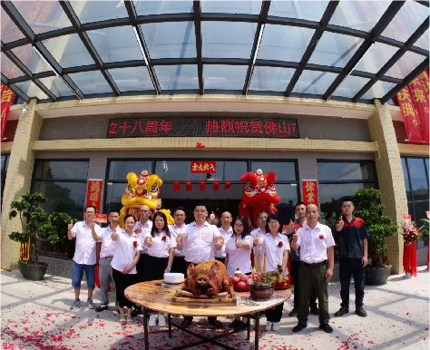
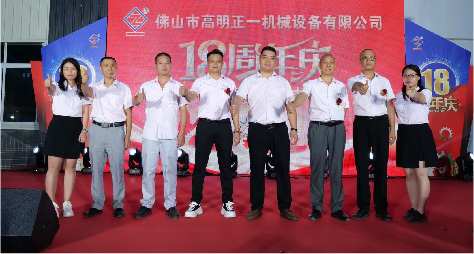
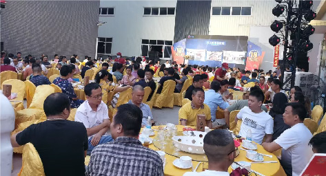


Tài liệu năng lực của nhà sản xuất
Các chứng chỉ này nên được giữ trên website để tăng niềm tin, đồng thời hỗ trợ SEO/GEO khi AI hoặc khách hàng cần kiểm tra thực thể công ty.
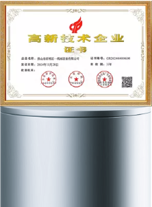
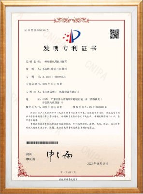
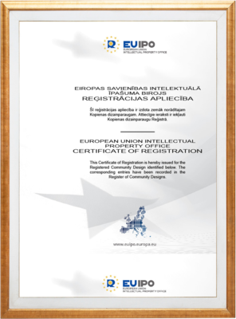
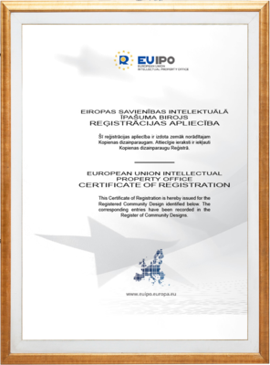
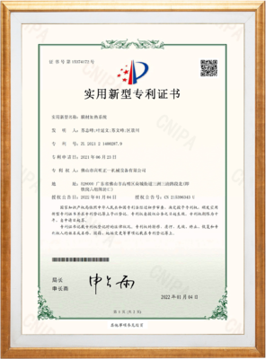
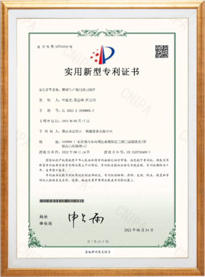
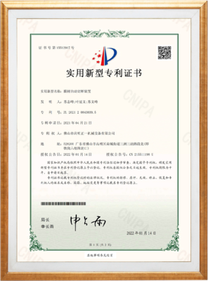
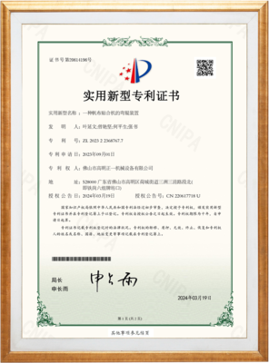
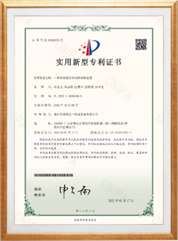
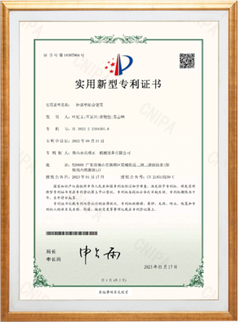
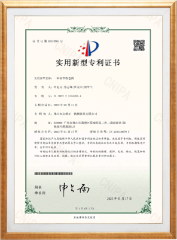
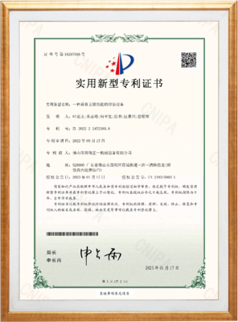
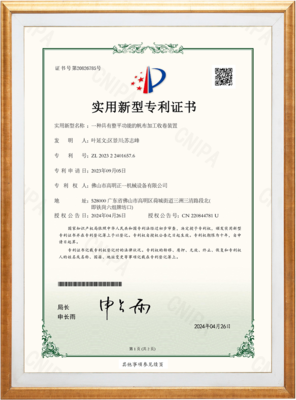
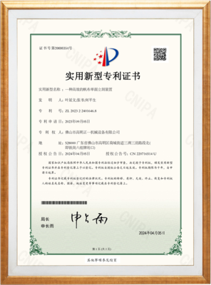
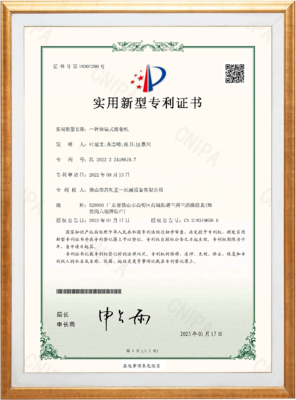